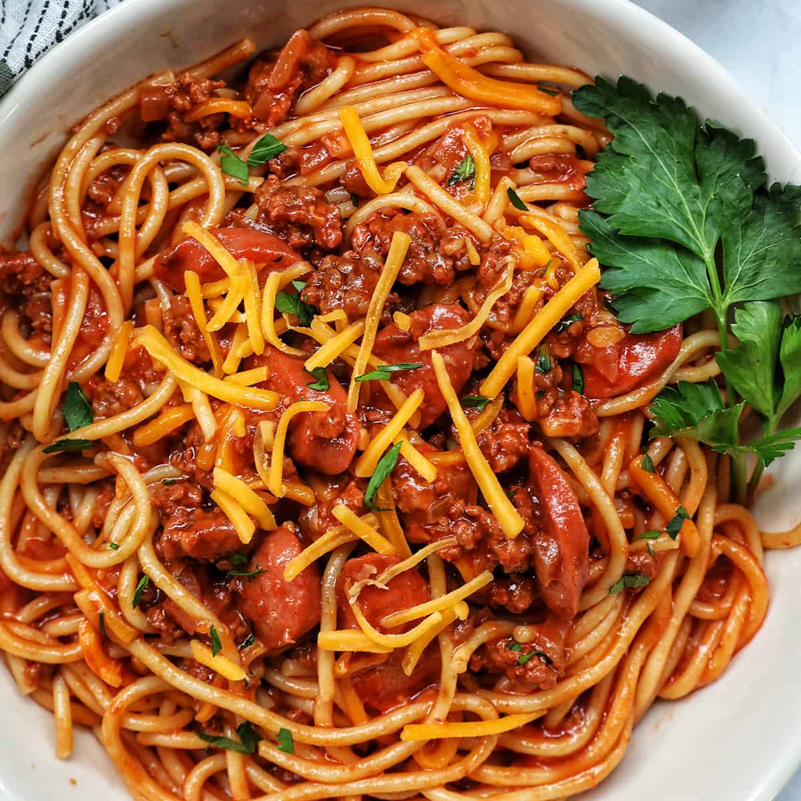

Spaghetti

Description:
Spaghetti is a long, thin, solid, cylindrical pasta.
It is a staple food of traditional Italian cuisine.
Like other pasta, spaghetti is made of milled wheat,
water, and sometimes enriched with vitamins and minerals.
Italian spaghetti is typically made from durum-wheat semolina.
Ingredients:
- Onion
- Water
- Garlic
- Ground Beef
- Salt
- Pepper
Steps:
- Boil Water. Start with a very large pot of water, about 6 quarts per pound of pasta.
- Add Salt. Put in a lot of salt, about 3 tablespoons.
- Add the Pasta.
- Stir.
- Drain.
- Stir in the Sauce.
- Whole-wheat pizza crust!